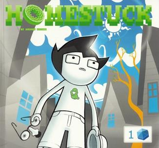

What are Webcomics?
ESTE TEXTO LO AGREGUE HOY WOOO
ya le entendi a git creo

Webcomics (also known as online comics or Internet comics) are comics published on a website. While many are published exclusively on the web, others are also published in magazines, newspapers or in books.
Webcomics can be compared to self-published print comics in that anyone with an Internet connection can publish their own webcomic. Readership levels vary widely; many are read only by the creator's immediate friends and family, while some of the largest claim audiences well over one million readers. Webcomics range from traditional comic strips and graphic novels to avant garde comics, and cover many genres, styles and subjects. They sometimes take on the role of a comic blog. As of 2006, only a select few are financially successful.
There are several differences between webcomics and print comics. With webcomics the restrictions of the traditional newspapers or magazines can be lifted, allowing artists and writers to take advantage of the web's unique capabilities.
in the picture: Homestuck by Andrew Hussie. One of the longest webcomics ever made in english with 10,028 pages